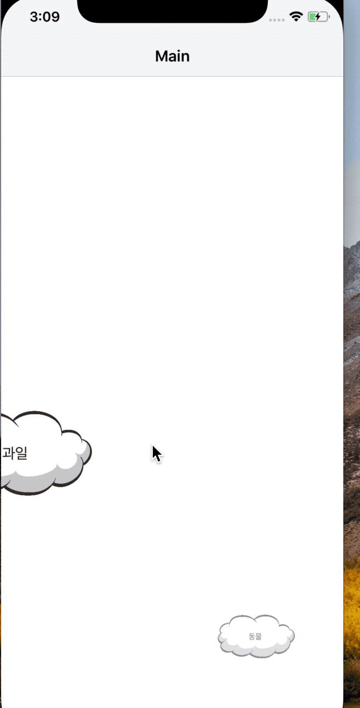
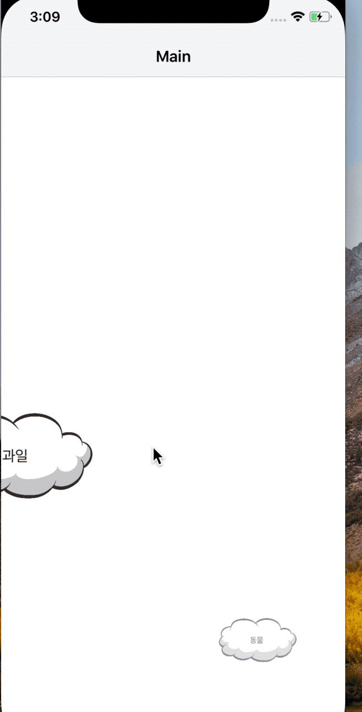
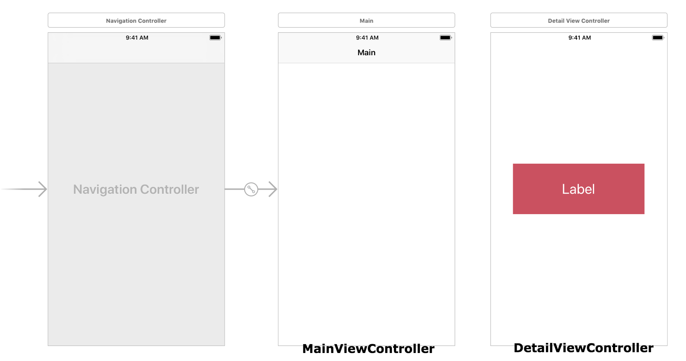
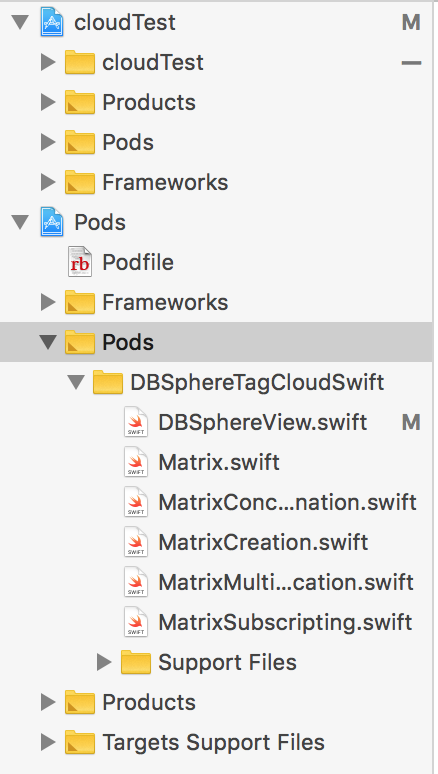
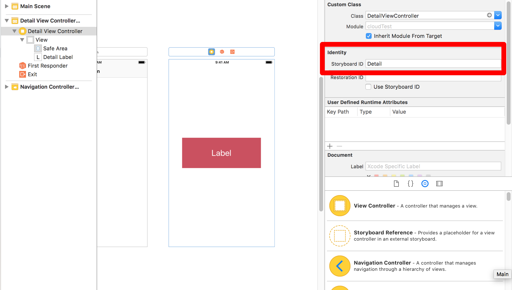
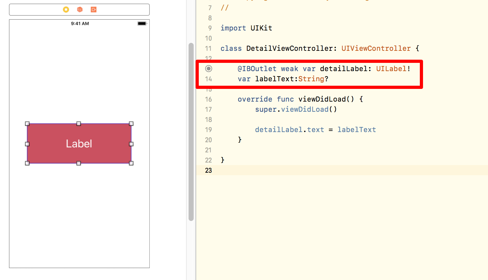

본 포스팅은 서울여자대학교 GURU2 수업 결과물입니다.
본 포스팅은
DBSphereTagCloudSwift 의 외부 라이브러리를 사용했습니다.
이번 포스트에서는 위/아래/좌/우로 3d 스크롤이 가능한 태그 클라우드를 구현해 보겠습니다.
제가 수업에서 했던 프로젝트는 '졸뽀'라는 이름으로, 선후배의 졸업 작품을 태그로 분류하여 정보를 얻을 수 있게 하는 졸업 프로젝트 서포팅 어플리케이션입니다.
초기에 조원들이 떠올렸던 아이디어는 "'태그'를 구름으로 분류하고, 그 태그를 누르면 관련 프로젝트로 이동했으면 좋겠다"였으며 원래 구현하려고 했던 모습은 3d 스크롤이 아닌 평면 상에서 움직이는 구름의 모습이었습니다.
그러나 분류는 어찌 어찌 한다고 해도, 태그를 어떻게 시각화 하느냐가 제일 큰 문제였죠. 좀 더 입체감을 부여해 사용을 했을 때 재밌게 다가왔으면 했습니다.
tag, cloud, node...등으로 검색을 했고, 그 중 괜찮은 오픈소스를 커스텀하여 프로젝트에 적용했습니다. 구현 과정이 어렵지 않고, 결과물도 예쁘게 나오기 때문에 비슷한 효과를 원하시는 분들께 추천드리는 오픈소스입니다.
여기서는 '태그'에 초점을 맞췄지만 실제로 구현하실 때는 태그뿐 아닌 이용자 사진을 넣은 주소록이나, (...)에도 적용할 수 있으실 것 같습니다.
왼쪽 예시는 제가 수업에서 구현했던 화면이며, 오른쪽은 이번 포스트에서 만들어 볼 프로젝트입니다.
(샘플 코드 바로가기)
 

시작하기

우리가 만들 프로젝트의 기본적인 동작 방식은 다음과 같습니다.
1. 태그 구름 클릭 시 해당 태그와 관련된 세부 구름이 등장한다.
2. 세부 구름 클릭 시 세부 구름의 정보가 담긴 새로운 뷰로 이동한다.
3. 배경을 클릭하면 등장했던 세부 구름이 사라진다.
우선 single view app으로 새로운 Xcode 프로젝트를 생성합니다.
이 프로젝트에서는 총 2개의 View Controller들을 사용할 것이며, 각각의 View Controller들은 다음과 같은 기능을 가지고 있습니다.
[MainViewController] : 태그 클라우드를 실제로 구현하는 뷰입니다.
[DetailViewController] : 세부 구름 버튼 클릭 시 이동하는 뷰입니다. 중간에 위치한 label에는 클릭 한 세부 구름의 제목이 들어가게 됩니다.
cocoaPods 추가하기
태그 클라우드를 구현하기 위해서는 cocoaPods(이하 코코아팟)을 추가해야 합니다. 코코아팟 사이트의 설명에 따르면,
cocoaPods는 Swift 및 Objective-C 코코아 프로젝트의 종속성 관리자입니다.
28,000 개가 넘는 라이브러리를 가지고 있으며 170 만 개가 넘는 응용 프로그램(앱)에서 사용되고 있습니다.
cocoaPods는 프로젝트를 우아하게 확장 할 수 있도록 도와줍니다.
라고 되어있습니다. 한마디로, 외부 라이브러리를 연동할 수 있는 툴입니다. 안드로이드 개발을 해보신 분들은 gradle과 같은 역할을 한다고 생각하시면 될 것 같습니다.
코코아팟 설치를 위해서 터미널을 열고 다음 명령어를 입력합니다.
설치가 끝나셨다면, 본론으로 들어가 보겠습니다.
메인 화면 구현하기
1. DBsphereTagCloudSwift라이브러리를 Podfile에 추가합니다.

- 터미널에서 vi Podfile을 입력 후,
사진과 같이 pod 'DBSphereTagCloudSwift', :git => "https://github.com/apparition47/DBSphereTagCloudSwift.git", :submodules => true 을 입력합니다.
2. 터미널에서 pod install을 입력하여 추가한 라이브러리를 프로젝트에 설치합니다.

- 모두 설치하셨으면 다음과 같이

라이브러리가 추가된 것을 확인하실 수 있습니다.
3. viewController.swift 파일에 라이브러리를 import 합니다.

4. DBSphereView 타입의 tagView, detailView를 각각 선언합니다.
5. 골격이 되는 코드를 작성합니다.
- 화면을 켰을때부터 태그 클라우드가 보이도록 하기 위해 viewDidLoad() 안에 입력합니다.
- 11 : 뷰의 크기를 지정합니다.
작업 중인 디바이스의 크기에 맞춰도 되지만, 편의를 위해 디바이스를 꽉 채우고도 남을 사이즈로 작업했습니다.
- CGRect란? 위치와, 크기를 가진 사각형 모양의 구조체로서 x, y는 기준점이 되는 좌표값, width와 height는 너비, 높이값입니다. (그림)
- 13 : tagView에 클라우드 태그들을 설정하는 작업입니다.
클라우드 태그의 형태는 버튼 뿐 아니라 label, image 모두 가능합니다. 우리는 구름을 클릭할 수 있도록 할것이기 때문에 버튼을 추가하도록 하겠습니다.
- 14 : view에 tagView를 하위 뷰로 추가하여 우리가 만든 tagView가 보이도록 하는 작업입니다.
- 기본 준비는 다 되었습니다. 이제 버튼만 만들면 되겠죠?
6. 버튼에 들어갈 이미지 불러오기


- 적절한 이미지를 불러와 Assets폴더에 넣습니다.
7. 태그 클라우드에 들어갈 배열 설정 후 배열의 크기만큼 tagView에 설정하기
- 위에서 setCloudTags는 배열 형태를 인자로 받는다고 설명드렸습니다. 이를 위해 태그, 프로젝트에 관련된 배열이 각각 필요합니다.
- 태그와 세부 내용이 담긴 배열 두개를 각각 만들어도 되나, 빠르게 설명드리기 위해 tagAndDetailDic와 같이 태그를 key로 한 Dictionary를 선언했습니다.
- key를 태그 구름으로, value를 세부 구름으로 쓸 것이기 때문에 value는 문자열이 담긴 배열의 형태로 선언했습니다.
8. 버튼의 속성 변경하기
- 시각적으로 재미있는 효과를 주기 위해서는 이미지와 컬러가 다채로운게 좋습니다. 우선 2번째 줄에서 UIButton의 타입을 custom으로 설정합니다.
- 3~5 : 버튼의 타이틀, 색상, 폰트를 설정하는 작업입니다.
- 7 : 버튼의 배경 이미지를 설정하는 작업입니다. 앞에서 추가했던 구름 이미지의 이름을 named의 값으로 넣어주면 되겠습니다.
- 8 : width, height의 값을 조절하여 버튼의 크기를 설정합니다.
- 11 : 태그 구름을 클릭했을 때(touchUpInside) 상세 구름이 보이도록 하기 위해 addTarget메소드를 추가합니다. selector인 tagPressed()는 아래서 구현하겠습니다.
버튼 클릭 시 상세 구름 등장 애니메이션 구현하기
1. 상세 구름에 대한 배열 받아오기
- 태그에 대한 구름을 tagAndDetailDic의 key값으로 받아왔으니, 이제는 해당 key에 담긴 value값을 상세 구름의 타이틀로 지정할 차례입니다.
- btn은 우리가 클릭한 태그 구름입니다. 이 태그 구름의 타이틀을 tagAndDetailDic에서 검색한 후 결과값을 detailArray로 받아줍니다.
2. 상세 구름의 애니메이션 구현하기
- 5 : 구름을 클릭할 때마다 그림이 커지고 작아지는 등의 애니메이션이 적용됨을 보실 수 있습니다. 이는 animate라는 메소드 때문인데, 원형은 다음과 같습니다.
참고 링크
간단하게 duration은 지연 시간, animations는 우리가 구현할 애니메이션의 내용이라고 보시면 좋을 것 같습니다.
- 6~37 : 애니메이션의 내용입니다.
- 7 : CGAffineTransform은 이미지의 크기를 변경해주는 메소드입니다. 양수일 경우 x, y에 설정한 값만큼 확대가 되며, 반대일 경우 축소됩니다.
- 9 : 상세 구름의 위치를 지정합니다.
태그 구름의 위치에서는 frame: CGRect(x: -200, y: -200, width: 1000, height: 1000) 와 같이 x, y값을 직접 지정해 줬었죠? 이와 달리 상세 구름은 태그 구름 '주변에' 등장하도록 할 것이기 때문에 클릭된 태그 구름(btn)의 x, y값이 기준이 되어야 합니다. btn.frame.origin.x, btn.frame.origin.y으로 x, y좌표 값을 구한 후 적절한 값을 지정해 줍니다.
- 33~36 : 상세 구름이 등장을 마쳤을 때 보여질 애니메이션입니다. 이미지의 크기를 원래대로 되돌리고, ((scaleX: 1, y: 1)) 구름들이 다시 움직이게 함을 보실 수 있습니다.
3. 배경 클릭 시 상세 구름이 사라지도록 구현하기
- UITapGestureRecognizer는 말 그대로 tap했을 때의 액션을 지정할 수 있는 메소드입니다. gesture라는 변수를 지정하고 tap을 감지했을 때 backgroundPressed라는 메소드를 타겟으로 지정합니다.
- detailView 입장에서 배경이 되는 tagView에 gesture를 add합니다.
- backgroundPressed 메소드를 구현합니다. isHidden값을 true로 설정하여 detailView가 보이지 않도록 하면 되겠죠? (아예 사라지도록 하는 방법도 있습니다.)
메인 화면과 상세 정보 화면간 이동 구현하기
1. 레이아웃 구성하기


- 올바른 값이 넘어왔는지 확인하기 위해서 상세 정보 뷰를 만들어 메인 뷰의 값을 넘겨주도록 하겠습니다.
- DetailViewController에 Id를 "Detail"이라고 설정하고, 레이블을 넣어줍니다.
- 레이블의 id를 detailLabel로 설정하고, MainViewController의 상세 구름의 타이틀을 넘겨받을 변수를 labelText로 선언합니다.
2. 상세 구름 클릭 시 화면 전환 구현하기
- 위에서 tagPressed()안에 상세 뷰로 전환하는
를 썼던 것 기억하시나요? 이제 detailPressed를 정의해 보도록 하겠습니다.
- 2 : 우리가 이동할 DetailViewController는 Main.storyboard 안에 있습니다. Main.storyboard의 값을 알기 위해서 UIStoryboard 타입의 변수를 선언한 후 name의 값을 "Main"으로 지정해 줍니다.
만약에 DetailViewController가 Detail.storyboard안에 있다면 name의 값은 "Detail"이 되겠죠?
- 3 : 어느 스토리보드에 있는지 알았으니, 이제 뷰를 찾기만 하면 되겠습니다. 앞에서 선언한 storyboard의 ID를 instantiateViewController메소드의 인자로 넣어주고, 이를 nextView라는 변수로 선언합니다. nextView는 이제 DetailViewController와 같다고 생각해 주시면 되겠습니다.
- 4 : 상세 뷰에 있는 레이블의 값을 선택한 상세 구름의 타이틀로 넣어주는 작업입니다.
- 6 : 마지막으로 뷰를 전환하는 작업입니다. ViewController는 현재 네비게이션 뷰 컨트롤러에 종속되어 있기 때문에 nextView를 push해 줍니다.
3. 넘겨받은 값을 화면에 뿌려주기
- 위에서 상세 구름의 타이틀을 labelText값으로 받았으니, detailLabel의 text값을 labelText으로 대입해 줍니다.
마치며
지금까지 태그 클라우드 구현 과정을 살펴 보았습니다. 앞서 말씀드린 것처럼 커스텀의 방향에 따라 다양한 효과를 낼 수 있을 것이라고 생각합니다. 본 포스트에 대한 질문 혹은 제안 사항이 있으실 경우, 연락 주시면 감사하겠습니다.
이 글의 저작권은 글쓴이에게 있으며, 배포는 코더스하이가 합니다.